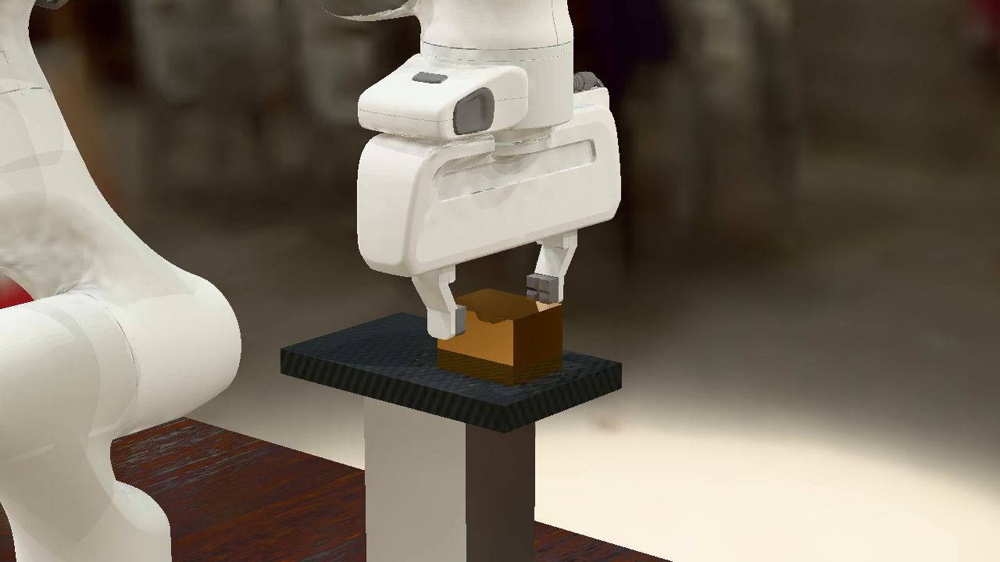
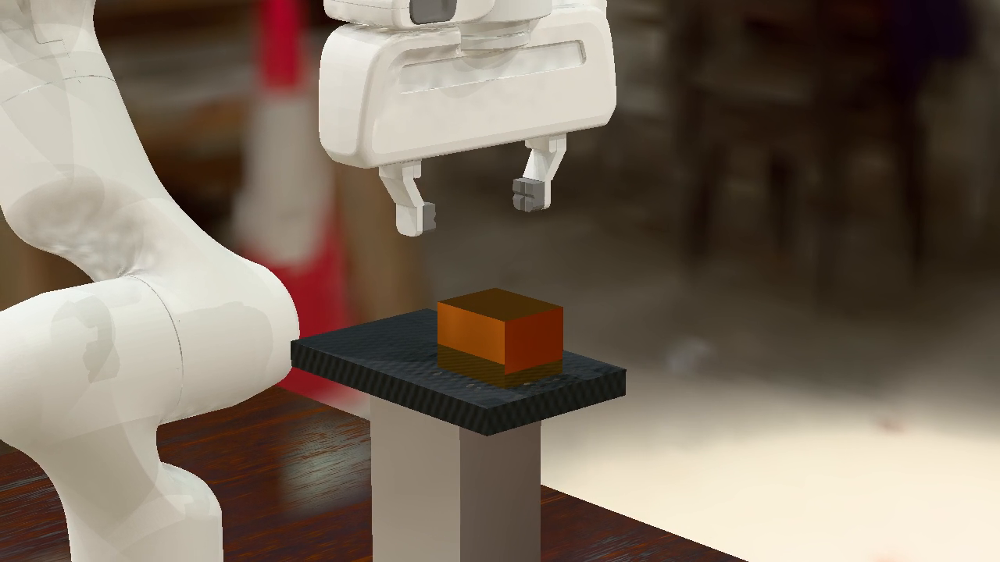
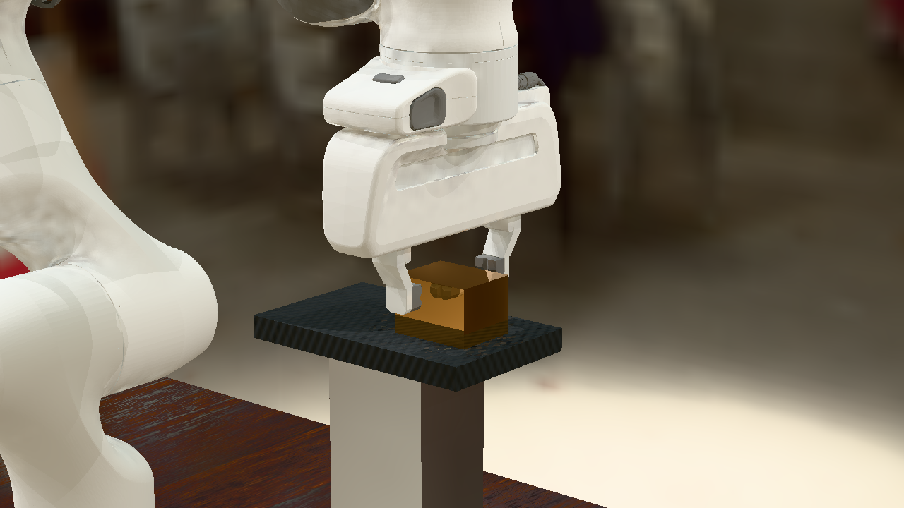
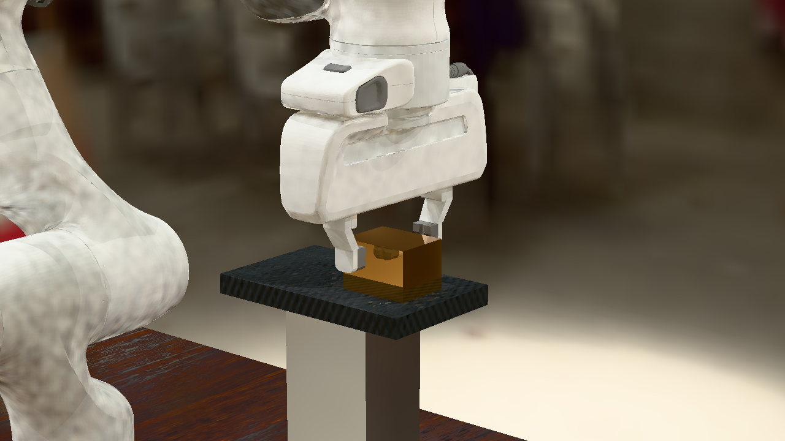
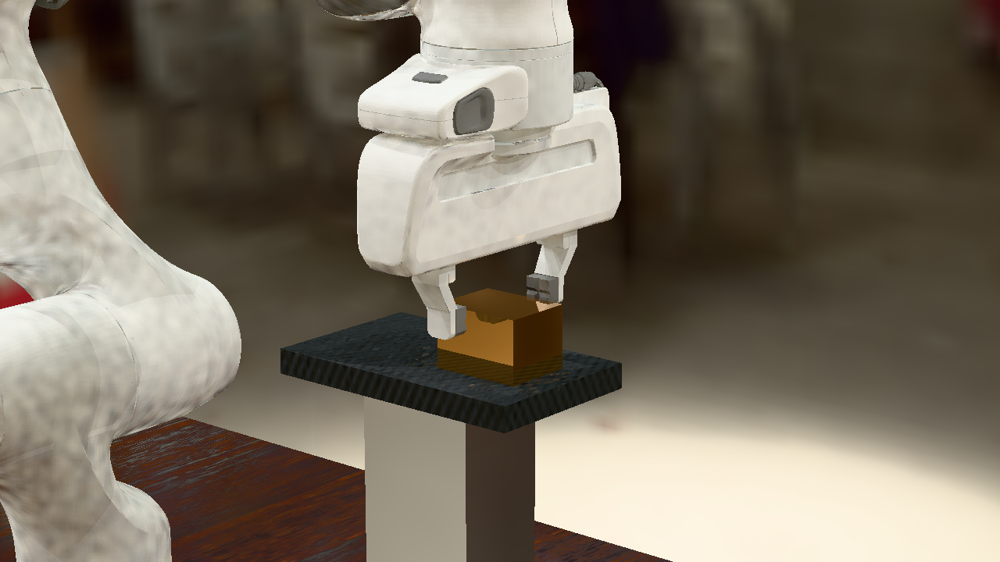

Panda 同轨迹预览 · 真实画面与耗时
真实捕获成本与审计状态
FPS = 1000 / 完成帧墙钟均值。P95为最近秩；RGB与四通道、两轮分别列出，不以合并值替代。影片按30 FPS播放，播放速度不是实测吞吐。质量状态保持原审计结论，不能从画面好看或媒体验证成功推出通过。
| 方案 | 轮 | 通道 | 实测FPS | 均值ms | P95 ms | 峰值ms | 镜头 / 灯光 | 画质审计 |
|---|
| 近场柔和漫反射 · 12 cm | 1 | rgb | 49.53 | 20.19 | 23.47 | 25.56 | detail / recorded | failed_observed_gate |
| 近场柔和漫反射 · 12 cm | 1 | all | 37.08 | 26.97 | 34.15 | 37.66 | detail / recorded | failed_observed_gate |
| 近场柔和漫反射 · 12 cm | 2 | all | 37.32 | 26.79 | 33.54 | 40.72 | detail / recorded | failed_observed_gate |
| 近场柔和漫反射 · 12 cm | 2 | rgb | 52.07 | 19.21 | 22.53 | 24.40 | detail / recorded | failed_observed_gate |
| 完整距离一跳 · 4 路 | 1 | rgb | 50.32 | 19.87 | 24.16 | 25.94 | detail / recorded | failed_observed_gate |
| 完整距离一跳 · 4 路 | 1 | all | 36.64 | 27.29 | 35.66 | 40.63 | detail / recorded | failed_observed_gate |
| 完整距离一跳 · 4 路 | 2 | all | 36.48 | 27.41 | 35.27 | 40.48 | detail / recorded | failed_observed_gate |
| 完整距离一跳 · 4 路 | 2 | rgb | 52.33 | 19.11 | 22.92 | 24.28 | detail / recorded | failed_observed_gate |
30 FPS playback · 10 s / 300 frames. Playback speed is separate from measured RGB render cost. 下面裁剪保留原像素尺寸；影片画面可能受有损压缩影响。Status is copied from the named receipt, not inferred from appearance.
Loading…
近场柔和漫反射 · 12 cm
compact-t4-p4-g2-k25-r2-visibility-ratio-local-120mm
RGB 捕获均值： 20.188485000204917 ms · 画质审计： failed_observed_gate
Open original video / 原片
完整距离一跳 · 4 路
compact-t4-p4-g2-k25-r2-visibility-ratio
RGB 捕获均值： 19.87435133429244 ms · 画质审计： failed_observed_gate
Open original video / 原片
登记视频解码帧 · 保留原像素尺寸
Frame 59 · motion 2.000000 s
完整分辨率视频解码帧（有损）
近场柔和漫反射 · 12 cm · 1280 × 720 px完整距离一跳 · 4 路 · 1280 × 720 px
Frame 60 · motion 2.033125 s
完整分辨率视频解码帧（有损）
近场柔和漫反射 · 12 cm · 1280 × 720 px
完整距离一跳 · 4 路 · 1280 × 720 px Frame 149 · motion 5.000000 s
完整分辨率视频解码帧（有损）
近场柔和漫反射 · 12 cm · 1280 × 720 px
完整距离一跳 · 4 路 · 1280 × 720 px Media, receipt and pixel checks / 核验收据
原始无损帧图
点击查看1:1原图。未调色、未插帧；上方视频为有损编码。0.5–2.3秒可留意夹指；镜头以实际记录为准。
近场柔和漫反射 · 12 cm · 帧 59 · 原始无损PNG
近场柔和漫反射 · 12 cm · 帧 60 · 原始无损PNG近场柔和漫反射 · 12 cm · 帧 149 · 原始无损PNG完整距离一跳 · 4 路 · 帧 59 · 原始无损PNG
完整距离一跳 · 4 路 · 帧 60 · 原始无损PNG
完整距离一跳 · 4 路 · 帧 149 · 原始无损PNG